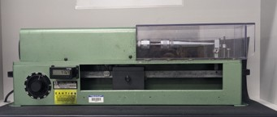

Fig. 1 —

Fig. 2 —

Fig. 3 —
Rotating bending fatigue testing of 1020 HR steel specimens to reconstruct an S-N curve and validate predicted fatigue life against experimental results.
Fig. 1 —
Fig. 2 —

Fig. 3 —